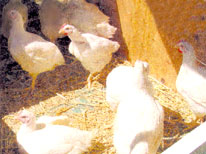

"We think that the chickens are a pretty good barometer," says Tom Skinner, spokesman for the Center for Disease Control in Atlanta. "It's just a matter of making sure that we have the resources to do what is necessary to prevent West Nile from reemerging. Basically, there is no vaccine to prevent the virus, and there is no drug you can use to treat it."
The West Nile virus first appeared in the Western hemisphere in 1999 in New York City, claiming seven lives and afflicting over 60 people. As MOTHER goes to press, three people have been infected this year, and the virus has been detected in Rhode Island, Connecticut and Massachusetts. How the virus migrated to the U.S. is open to speculation, although some believe that a shipment of tires from Asia may have transported nesting mosquitoes into New York Harbor.
Beyond the Northeast, many states are casting a watchful eye through the use of "sentinel" chickens. Scientists at Florida University are even developing advanced satellite technology to create a national "risk map" to predict where another deadly outbreak may occur.
While the chances of contracting the disease are minimal, it doesn't hurt to take precautions. Use insect repellent containing DEET, get rid of standing water around the house, and keep screen windows and doors in good condition. After all, we have to let these insects know that they're too far west of the Nile .
-Devon Madison
|
 |
|
|